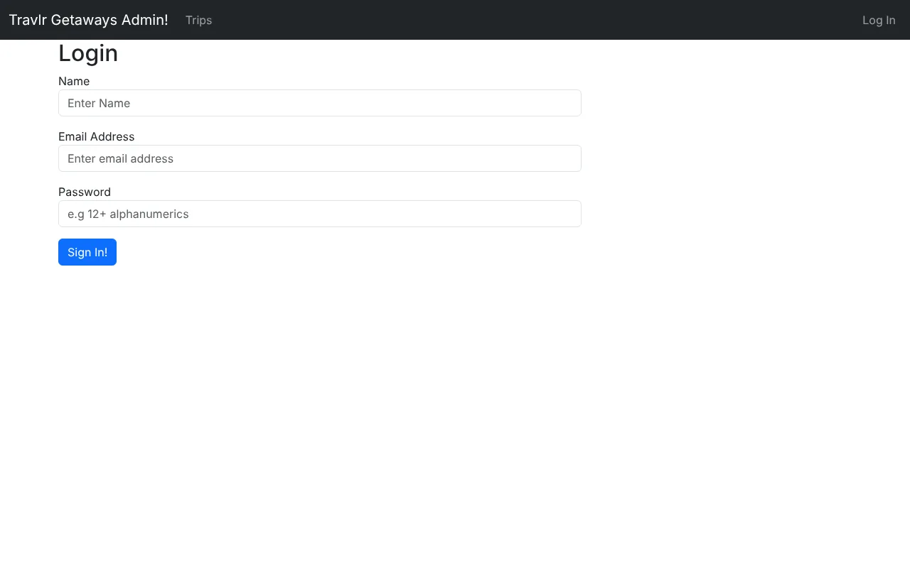
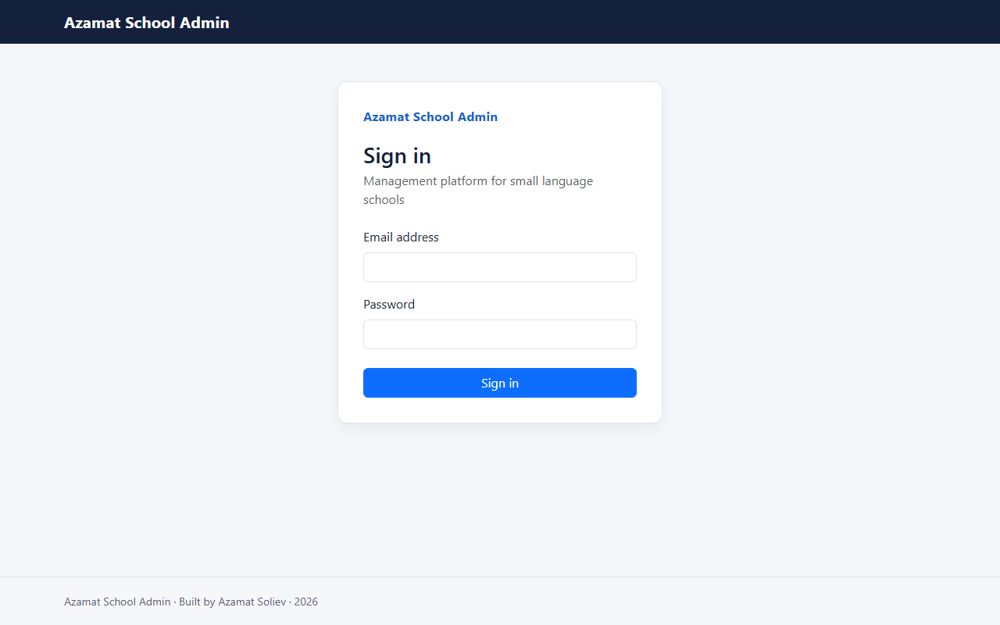
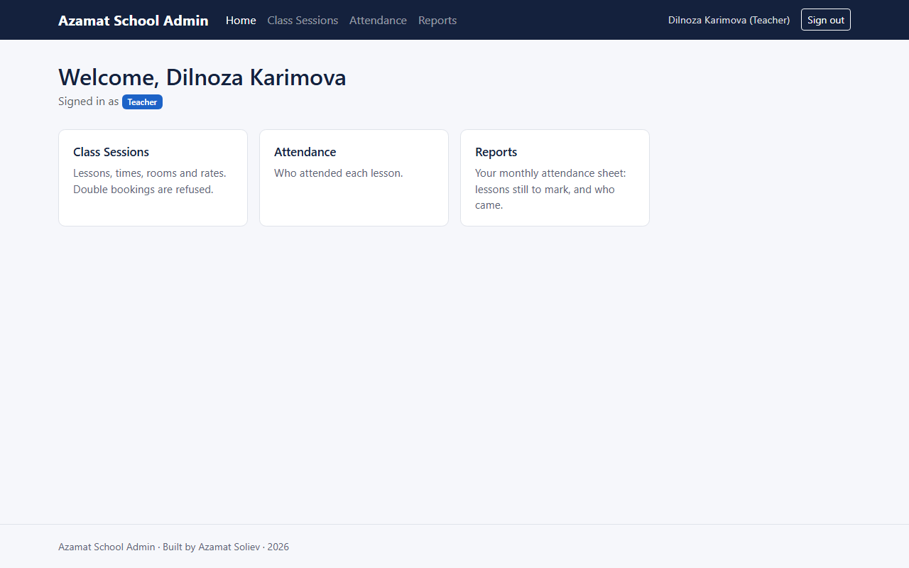

Step 4 of 6 · Milestone Two
Enhancement One: Software Design and Engineering
The original application had one kind of user, who was either signed in or not. This enhancement changed its structure: three roles with checks on every action, record and field, five school records served by one generic controller and one configuration-driven screen, and the defects from the code review corrected.
- Category
- Software design and engineering
- Course outcomes
- Fully met: 1, 4 and 5. Partly met: 2, completed by Enhancement Three and this portfolio.
- Milestone
- Milestone Two, September 2026, with additions in the final release
- Code at this stage
enhancement-1-software-design- Changes from the original
- Compare on GitHub
- Narrative
- Word document PDF
What changed
- One controller, five records. A generic controller factory on the server and one configuration-driven component in Angular serve students, teachers, class sessions, payments and attendance. A sixth kind of record needs a schema and two short descriptions, one for the server and one for the interface. In the original, the trip alone had twenty-one files of its own.
- Three roles, three checks. Owner, accountant and teacher, with the owner inheriting every permission. Every request is checked for its role, the records in scope and the fields it may touch.
- The review’s findings corrected. Stored cross-site scripting, a password work factor raised from 1,000 to 210,000 iterations with an upgrade at sign-in, an unreachable branch answering 501, a hardcoded address, and the repeated controller code.
- Carried through in the final release. Travel features and public registration removed, sign-in rebuilt, and an inherited defect that let one failed sign-in stop the server fixed and covered by a test. Version 1.0.1 fixed the password upgrade itself, which refused accounts stored before it once they were loaded from the database.
Evidence
-
Role
May this role perform this action at all?
A teacher may list class sessions. Only an owner may create staff accounts.
-
Scope
Which records may it touch?
A teacher's query is limited to their own lessons. A record outside that scope is refused with 403, never disguised as 404.
-
Fields
Which fields may it write, and read?
Writes keep only the fields the role may set. A teacher reads students' names, never their contact details.
The query that reaches MongoDB already carries all three answers, so a record the caller may not see is never loaded.
app_api/config/entities.js, and applied by the controller factory to every kind of record.






Narrative
Artifact description
The artifact is Travlr Getaways, a full-stack web application I built as the final project for CS 465, Full Stack Development, in July and August of 2026. It is a MEAN stack application, meaning MongoDB, Express, Angular and Node.js, and in its original form it consisted of three parts sharing one backend: a public, server-rendered customer site built with Handlebars templates, a REST API, and a separate Angular single-page application used by administrators. It managed one entity, a trip, and supported full create, read, update and delete operations on that entity behind token-based authentication. Across the three enhancements of this capstone it became a management platform for a small language school, released in October 2026 as version 1.0.0 under the name Azamat School Admin. This narrative covers Enhancement One, which changed the application’s structure. The original and every enhanced version are tagged in the project’s public repository, so each stage can be viewed and compared.
Justification for inclusion
I selected this artifact because it was the only piece of work in my program that spanned every layer of a real application, and because its central weakness was structural rather than cosmetic. The original application had exactly one kind of authenticated user. The user schema contained four fields, and none of them described what that user was permitted to do, so the entire permission model was a single binary state: signed in, or signed out. A weakness of that kind cannot be corrected by improving code within the existing structure. It requires changing the structure, which is precisely what the software design and engineering category is meant to demonstrate.
The enhancement converts the application into the foundation for a management platform for a small language school, a real use I have in mind rather than an exercise. Five entities were added: Student, Teacher, ClassSession, Payment and Attendance. Rather than writing five controllers, five route files and five sets of Angular components, I built one generic controller factory on the server and one configuration-driven component in the administrative interface. The factory takes a Mongoose model and a configuration object and produces all five request handlers for it. The Angular component reads an entity definition and builds its table columns and form controls from that definition at runtime. Adding a sixth entity to this platform now means writing a schema and adding two short configuration entries, one for the server and one for the interface.
The components that best showcase my abilities are the controller factory in app_api/controllers/crudControllerFactory.js and the permission system in app_api/config/roles.js. The factory separates three authorization concerns that are commonly collapsed into one: whether a role may perform an action at all, which records it may perform that action on, and which fields of a record it may write. The second of those matters most. While planning this enhancement I recognized that a role check alone was insufficient, because a teacher who passed a check for the teacher role would then receive every teacher’s class sessions and every student record. The role condition would be satisfied even though the records belonged to somebody else. That is horizontal privilege escalation, and I found it during design rather than after implementation. The factory therefore applies a record-level scope rule to every query, and verifies ownership of a specific record before any update or delete.
A related decision follows from it. When a record exists but falls outside the caller’s scope, the response is 403 Forbidden rather than 404 Not Found. Returning 404 would confirm to an unauthorized caller that no such record exists, which means returning it selectively would confirm when one does. The two cases are deliberately indistinguishable.
The artifact was also improved by correcting five specific defects I identified in my code review. The JWT middleware contained a branch testing whether splitting the authorization header produced fewer than one element, a condition that string splitting cannot produce, so the branch was unreachable and the malformed-header case it was reaching for went unhandled. That branch also returned HTTP 501, which states that the server does not support the request method, where 401 was correct. The public travel template rendered a trip description using three Handlebars braces rather than two, which disables escaping and inserts database content into the page as live HTML. That is a stored cross-site scripting vulnerability, and it mattered more after this enhancement than before, because staff now create records containing free-text fields. Passwords were hashed with PBKDF2 at 1,000 iterations, far below current guidance for that algorithm. The server-rendered travel controller hardcoded its API address. And the original trips controller repeated the same five-step shape in every function.
The password fix required a careful design decision. Raising the iteration count to 210,000 would have invalidated every credential already stored, because a hash produced at 1,000 iterations does not verify at 210,000. Rather than forcing a password reset, I store the iteration count alongside each hash. Existing credentials verify at the factor they were created with, and are transparently upgraded the next time the account signs in, which is the only moment the plain-text password is available. I also replaced the string comparison of hashes with a constant-time comparison, since a comparison that returns as soon as it finds a difference leaks information about how much of a candidate value was correct.
The final release carried this work to its conclusion. The customer-facing travel website, its trip API and more than fifty travel images were removed. They served the business the project began as, every route they exposed was attack surface the school did not need, and the static pages came from a website template supplied with the course rather than from my own work. Public registration was removed as well, so staff accounts are now created by an owner, with the role stated at creation. The sign-in screen, unchanged since CS 465, was rebuilt: it had asked for a name the server never read, guessed at the outcome with a three-second timer, showed nothing for a wrong password, and printed the token to the browser console. A final review also found a defect inherited from the original sign-in code. An error while looking up an account escaped as an unhandled promise rejection, which stops a Node process, so one sign-in attempt made while the database was unreachable shut down the entire API. It now answers that sign-in is temporarily unavailable and keeps serving, and a test confirms that the defect returns if the fix is removed.
The specific skills this enhancement demonstrates are object-oriented software design with the factory pattern and configuration-driven components, role-based access control applied to actions, records and fields, secure password storage with a backward-compatible migration, REST API design with accurate status codes, and unit testing that asserts what the system refuses as well as what it allows.
Course outcomes
I planned in Module One to meet three outcomes with this enhancement, and I met all three. Outcome four, using well-founded and innovative techniques to deliver value, is met by the generic factory and the configuration-driven component. That pattern is what made five entities achievable inside one module; writing them out individually would have multiplied both the work and every future defect by five. Outcome five, developing a security mindset that anticipates adversarial exploits, is met by the combined role and ownership permission model, by the field whitelist that prevents a client from setting schema fields it should not reach, by registration that never accepted a role from the request, later replaced entirely by owner-created accounts, and by status codes chosen so they do not disclose what exists. Outcome one, building collaborative environments that enable diverse audiences to support decision making, is met by the three-role model, which gives an owner, an accountant and a teacher genuinely different views of the same system rather than one undifferentiated interface.
I have one update to my coverage plan. My Module One plan treated automated testing as supporting evidence for outcome four, and writing the suite showed that it deserves more weight than that. At this milestone, forty-three tests ran against the permission system, the controller factory, the token parser and the credential handling, and most of them assert refusals rather than successes: a teacher denied an owner action, a teacher refused another teacher’s record, a malformed header rejected, a client-supplied field discarded. A permission suite that only tested the permitted cases would pass against a function that always returned true. By the final release the backend suite had grown to 214 tests, joined by 69 interface specs and five end-to-end tests that run in a real browser.
In summary, this enhancement fully meets outcomes one, four and five. It partially meets outcome two, through the role-specific interface and the explanatory documentation in the code; that outcome is completed by the audience-specific reports of Enhancement Three and by this portfolio. Outcome three was not a target of this enhancement and is met in Enhancement Two. No outcome planned for this enhancement was left unmet.
Reflection on the process
The most useful thing I learned is that a generic solution only stays generic if you are disciplined about where model-specific knowledge lives. My first version of the controller factory had a conditional inside it that tested which model it was operating on, so that class sessions could be given a rule the other entities did not need. That single line undermined the entire claim the factory was making, because a factory that names a specific model is no longer independent of the models it serves. I replaced it with a configurable array of pre-save checks. The factory now runs whatever checks its configuration supplies without knowing anything about them, and the entity that needs a rule supplies it. The scheduling conflict check in Enhancement Two attached through that same mechanism without the factory changing at all, and in the final release the same configuration gained per-role field projections, again without a special case in the factory.
The main challenge was resisting the pull toward what is convenient. Scoping attendance records to a teacher is awkward, because attendance has no teacher field of its own; it references a class session, and the session references the teacher. The convenient answer is to copy the teacher reference onto every attendance record, which makes the query a single field match. I chose the extra lookup instead. A duplicated reference is a value that can drift out of step with the record it was copied from, and if a session were ever reassigned to a different teacher, the stale copies would silently grant the wrong person access. Paying one query to avoid a class of security bug that would be very hard to notice is the right trade, and being able to state why is more valuable than the small performance saving would have been.
A second challenge was the bootstrap problem created by my own security rule. Only an owner can raise an account’s role, which means a brand-new installation has no owner and no way to create one through the API. The tempting shortcut is to make the first account to register an owner, but that hands control of a new school to whoever reaches the sign-up page first. I wrote a command-line script instead, so the first owner can only be created by somebody with shell access to the server, who already administers the machine. Recognizing that a security rule had produced a gap, and closing it without weakening the rule, was the most instructive part of this enhancement.
Incorporating feedback
My Module One enhancement plan was approved, and the instructor feedback on this milestone confirmed that each rubric criterion was met without requesting changes. The feedback that shaped the work therefore came from review rather than from grading. The code review I recorded before changing any code identified the five defects corrected in this enhancement, and the enhancement was built to resolve each one. My own design review caught the model-specific conditional in the first version of the factory before submission. Later stages reviewed this work again and found three more problems in it. Enhancement Three discovered that the entity router had made a public page demand a sign-in. The final review found the inherited sign-in defect described above, and a review after version 1.0.0 found a flaw in my own password upgrade. Mongoose fills in a schema’s default values when it loads a record, so an account stored before the iteration count existed was read back with the new count, checked at the wrong work factor, and refused. My tests had missed it because they built the account in memory rather than loading it the way a query does; version 1.0.1 removes the default, and the tests now load the account exactly as the database returns it. Each problem was corrected together with a test that fails if the defect returns, so the lesson is kept in the code rather than in memory.